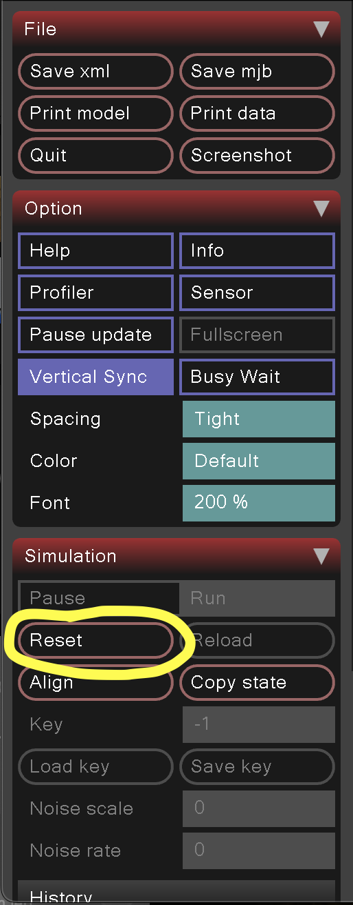

- What behavior am I trying to teach?
- What exactly can the agent control?
- What does the agent observe?
- How is the environment physically defined?
- What timestep is the simulation running at?
- How often do actions change?
- Does the system behave correctly under open-loop control?
- Frame a learning behavior explicitly
- Define the environment in MuJoCo
- Configure physics parameters and timestep
- Understand the difference between simulation dt and control dt
- Verify the system with open-loop control before adding learning
- A cart that moves horizontally along a track
- A rigid pole attached to the cart by a hinge joint
- Gravity acting downward
State Variables (Mechanical Description)
At any moment the system is described by:
- Cart position (x)
- Cart velocity (ẋ)
- Pole angle (θ)
- Pole angular velocity (θ̇)
Control
The agent controls one input:
- Horizontal force applied to the cart
Next we translate the physical system into an RL problem. We define:
Agent
A policy that outputs a horizontal force applied to the cart. The agent does not directly control the pole, stabilization is indirect.
Action Space
A continuous scalar value representing cart force. This value will later be bounded (e.g., within a specified force limit).
Observation Space
Cart position (x), cart velocity (ẋ), pole angle (θ), pole angular velocity (θ̇). These quantities form the information available to the policy at each timestep.
Here the observation fully represents the state. In more complex systems it might be partial or noisy.
Objective
Maintain the pole in the upright position (θ ≈ 0) over time. The goal is stability, not speed or energy efficiency.
Success Metric
The system is considered successful if the pole remains upright for the duration of the episode horizon.
Termination Condition
The episode ends if:
- |θ| exceeds a chosen threshold (e.g., 30°), or
- A fixed time horizon is reached.
Horizon
A fixed episode length will be defined (for example, 5 seconds). The horizon determines how long the agent must maintain stability.
At this stage we're defining structure, not rewards or algorithms. Do this before writing code.
We'll run MuJoCo from Python. Create a folder for the demo:
mkdir -p mujoco_cartpole
cd mujoco_cartpole
Create and activate a virtual environment, then install MuJoCo and NumPy:
python -m venv .venv
source .venv/bin/activate
pip install -U pip
pip install mujoco numpy
Quick check: you should be able to import MuJoCo without errors:
python -c "import mujoco; print('mujoco version ok')"
cartpole.xml (MuJoCo MJCF)We defined a cart that moves horizontally (x) and a pole that rotates (θ). In MuJoCo we implement that with:
- body: a rigid object (cart, pole)
- joint: a degree of freedom (slide joint, hinge joint)
- geom: the shape used for collision/visualization (box, capsule, plane)
- actuator: how the agent applies control (a motor on the cart slide joint)
Create cartpole.xml with the content below. The comments show how the problem framing maps to the XML.
<mujoco model="cartpole">
<!--
GLOBAL PHYSICS SETTINGS
- timestep: simulation dt (physics integration step)
- gravity: sets the "down" direction and magnitude
-->
<option timestep="0.002" gravity="0 0 -9.81"/>
<worldbody>
<!-- Lighting: main light from above-front, fill from the side -->
<light name="main" pos="0 0 4" dir="0 0 -1" directional="true" diffuse="1 1 1" specular="0.4 0.4 0.4"/>
<light name="fill" pos="-2 2 3" dir="0.3 -0.3 -1" directional="true" diffuse="0.5 0.5 0.5" specular="0.1 0.1 0.1"/>
<!--
WORLD / GROUND
Light gray plane plus dark stripes along x so cart sliding is easy to see.
-->
<geom type="plane" size="5 5 0.1" rgba="0.92 0.92 0.95 1"/>
<!-- Dark floor stripes (perpendicular to cart motion) so motion is visible -->
<geom name="stripe_m2" type="box" pos="-2 0 0.051" size="0.22 5 0.008" rgba="0.45 0.45 0.5 1" contype="0" conaffinity="0"/>
<geom name="stripe_m1_5" type="box" pos="-1.5 0 0.051" size="0.22 5 0.008" rgba="0.45 0.45 0.5 1" contype="0" conaffinity="0"/>
<geom name="stripe_m1" type="box" pos="-1 0 0.051" size="0.22 5 0.008" rgba="0.45 0.45 0.5 1" contype="0" conaffinity="0"/>
<geom name="stripe_m0_5" type="box" pos="-0.5 0 0.051" size="0.22 5 0.008" rgba="0.45 0.45 0.5 1" contype="0" conaffinity="0"/>
<geom name="stripe_0" type="box" pos="0 0 0.051" size="0.22 5 0.008" rgba="0.45 0.45 0.5 1" contype="0" conaffinity="0"/>
<geom name="stripe_0_5" type="box" pos="0.5 0 0.051" size="0.22 5 0.008" rgba="0.45 0.45 0.5 1" contype="0" conaffinity="0"/>
<geom name="stripe_1" type="box" pos="1 0 0.051" size="0.22 5 0.008" rgba="0.45 0.45 0.5 1" contype="0" conaffinity="0"/>
<geom name="stripe_1_5" type="box" pos="1.5 0 0.051" size="0.22 5 0.008" rgba="0.45 0.45 0.5 1" contype="0" conaffinity="0"/>
<geom name="stripe_2" type="box" pos="2 0 0.051" size="0.22 5 0.008" rgba="0.45 0.45 0.5 1" contype="0" conaffinity="0"/>
<!--
CART BODY
This is the rigid cart object.
In problem framing, the cart has position x and velocity ẋ.
Those come from this slide joint below.
-->
<body name="cart" pos="0 0 0.1">
<!--
CART DOF: SLIDE JOINT
This creates the horizontal degree of freedom (x).
- axis="1 0 0" means motion along +x
- range limits how far the cart can slide
-->
<joint name="slide" type="slide" axis="1 0 0" range="-2 2"/>
<!--
CART GEOMETRY
A box shape so we can see the cart in the viewer.
-->
<geom type="box" size="0.15 0.10 0.05" rgba="0.25 0.45 0.85 1"/>
<!--
POLE BODY (attached to cart)
The pole is a child body of the cart, meaning it moves with the cart.
-->
<body name="pole" pos="0 0 0.05">
<!--
POLE DOF: HINGE JOINT
This creates the pole angle θ and angular velocity θ̇.
- axis="0 1 0" means it rotates about the y-axis
- with gravity, this rotation produces the falling dynamics we want
-->
<joint name="hinge" type="hinge" axis="0 1 0"/>
<!--
POLE GEOMETRY
Capsule from (0,0,0) to (0,0,0.6).
This gives the pole a visible shape and a lever arm.
-->
<geom type="capsule" fromto="0 0 0 0 0 0.6" size="0.03" rgba="0.85 0.25 0.25 1"/>
</body>
</body>
</worldbody>
<!--
ACTUATOR = AGENT CONTROL AUTHORITY
This is the key mapping from problem framing to code.
In problem framing we said:
"The agent controls a horizontal force applied to the cart."
Here we implement that by attaching a motor to the cart's slide joint.
- ctrlrange bounds the control input (action limits)
-->
<actuator>
<motor name="cart_motor" joint="slide" ctrlrange="-10 10"/>
</actuator>
</mujoco>
Key takeaway: The <joint> elements define the degrees of freedom (x and θ),
and the <actuator> defines what the agent can control (cart force).
Simulation timestep: timestep="0.002" means MuJoCo integrates physics at 500 Hz.
This is not the same as the rate at which your policy will change actions. We will control that later using
an action-repeat / control loop frequency.
Lighting and colors: The <light> elements and rgba on geoms
are for viewer visibility: a main light from above, a fill light from the side, and distinct colors (e.g. blue cart,
red pole) so the scene is easy to see when you run the open-loop script.
The dark floor stripes (non-colliding box geoms) make the cart’s horizontal motion easy to see.
One of the most misunderstood concepts in RL is the difference between simulation timestep and control timestep, they're not the same.
Simulation Timestep (Physics dt)
In cartpole.xml, we defined:
<option timestep="0.002"/>
This means MuJoCo integrates physics every 0.002 seconds. That is 500 Hz physics simulation.
At every simulation step, MuJoCo updates:
- Joint positions
- Joint velocities
- Contact forces
- Constraint resolution
Physics integration must run fast to remain numerically stable.
Control Timestep (Policy Update Rate)
The policy does not need to change its action at 500 Hz. Instead, we usually hold actions constant for multiple simulation steps.
For example:
- Simulation dt = 0.002
- Apply action every 10 simulation steps
Then:
Control dt = 0.002 × 10 = 0.02 seconds
This means the policy runs at 50 Hz.
Why This Matters
- Stability: Large control dt can cause jerky or unstable behavior.
- Energy Injection: Updating too slowly can inject unrealistic impulses.
- Learning Speed: Smaller control dt increases episode length (more steps).
- Numerical Accuracy: Physics dt must remain small for correct dynamics.
If simulation dt is too large → physics becomes unstable. If control dt is too large → control becomes coarse and hard to learn.
Example: Episode Length
Suppose the episode horizon is 5 seconds.
- Physics dt = 0.002 → 2500 simulation steps
- Control dt = 0.02 → 250 control decisions
Reinforcement learning algorithms count control steps, not raw physics steps.
Timing misconfiguration is one of the most common causes of RL failure. Many unstable training runs are actually physics or timing errors, not algorithm problems.
Before training any policy, verify that the environment behaves correctly under open-loop control. This is a required step: Physics → Control → Reward → Optimization.
Open-loop means the environment evolves according to physics while we apply a fixed control signal (not a learned policy). That lets you catch:
- unstable physics settings (timestep too large, poor damping)
- incorrect actuator configuration (wrong joint, wrong limits)
- unexpected scaling (forces too strong/weak)
- timing mistakes (control frequency too slow/fast)
open_loop.py (Sinusoidal Force Test)This script applies a sinusoidal force to the cart. The goal is not the control, but to confirm that the model responds smoothly and predictably.
To replay from the start, click Reset in the Simulation panel (or press R).

import os
import time
import warnings
warnings.filterwarnings("ignore", message=".*Wayland.*window position.*")
import numpy as np
import mujoco
import mujoco.viewer
model = mujoco.MjModel.from_xml_path("cartpole.xml")
data = mujoco.MjData(model)
action_repeat = 10 # hold action for this many physics steps
amp = 6.0 # force amplitude (N)
freq = 0.5 # sinusoid frequency (Hz)
physics_dt = model.opt.timestep
control_dt = physics_dt * action_repeat
state = {"mode": "script"}
def key_callback(keycode):
if keycode == 82: # R: reset
mujoco.mj_resetData(model, data)
elif keycode == 83: # S: script (sinusoid)
state["mode"] = "script"
elif keycode == 71: # G: GUI (viewer sliders)
state["mode"] = "gui"
def set_fixed_camera(viewer):
viewer.cam.type = mujoco.mjtCamera.mjCAMERA_FREE
viewer.cam.azimuth = 90.0 # side view so cart sliding is visible
viewer.cam.elevation = -15.0
viewer.cam.distance = 2.8
viewer.cam.lookat[:] = [0.0, 0.0, 0.4]
with mujoco.viewer.launch_passive(model, data, key_callback=key_callback) as viewer:
set_fixed_camera(viewer)
step = 0
last_sync = time.perf_counter()
while viewer.is_running():
if state["mode"] == "script" and step % action_repeat == 0:
u = amp * np.sin(2 * np.pi * freq * data.time)
data.ctrl[0] = u
mujoco.mj_step(model, data)
viewer.sync()
set_fixed_camera(viewer)
step += 1
if step % action_repeat == 0:
elapsed = time.perf_counter() - last_sync
if elapsed < control_dt:
time.sleep(control_dt - elapsed)
last_sync = time.perf_counter()
In the viewer: Press R to reset, S for sinusoid control, G to use the GUI actuator sliders. The camera is fixed in a side view so the cart’s sliding is visible; the loop throttles so the sim runs at roughly real time.
What to look for (your first screenshot checkpoint)
Example: initial load (no stepping) and normal sinusoid at default settings (amp=6, action_repeat=10):
- Smooth motion: the cart should accelerate smoothly, not teleport or jitter.
- Reasonable response: increasing
ampshould increase motion. - No exploding energy: the pole should not “shake itself to infinity”.
- No jitter at rest: if you set
amp=0, the system should not vibrate.
If the system looks unstable here, it will almost always fail in RL. Fix physics and timing first.
Linux Wayland: If you see a GLFW warning about “window position”, the viewer still works, the script suppresses it. To avoid it, run: WAYLAND_DISPLAY= python open_loop.py.
macOS note: On macOS, the MuJoCo passive viewer requires running with mjpython instead of python. Use: mjpython open_loop.py.
Run these quick tests in order and watch what changes.
After making code changes, run
source .venv/bin/activate in the terminal.
Then run python open_loop.py (on macOS, use mjpython open_loop.py instead).
Experiment A: Zero Action Stability Test
In open_loop.py, set amp = 0.0 so the cart receives no force.
The pole should fall naturally due to gravity.
The motion should look physically plausible (no jitter, no energy explosion).
Experiment B: Control Frequency Test
Change action_repeat:
action_repeat = 1(policy updates at physics rate)action_repeat = 10(50 Hz control if dt=0.002)action_repeat = 25(20 Hz control)
Observe how control “smoothness” changes:
large action_repeat can look jerky because the force is held constant longer.
This is one reason timing choices matter for learning.
Experiment C: Force Scaling Test
Change amp:
amp = 2.0(weak control authority)amp = 6.0(moderate)amp = 12.0(strong)
If amp is too small, the cart cannot move enough to influence the pole.
If amp is too large, the cart may slam into limits and create unrealistic motion.
Both cases can cause RL training to fail later.
- Violent jitter at rest (amp=0): timestep too large, missing damping, or unstable contacts/constraints.
- Cart barely moves even with large amp: actuator not connected to the correct joint, or control limits too small.
- Cart instantly shoots away: force scale too large, or control dt too large creating impulse-like behavior.
- Behavior changes dramatically with small dt changes: physics is near instability; reduce dt and/or add damping.
If any of these occur, fix environment physics/timing before moving forward. Reinforcement learning will not “solve” unstable simulation.
Example of an unstable case (large timestep 0.02, high amp and action_repeat):
In reinforcement learning, an “episode” is a rollout of the environment for a fixed duration (or until failure). To set episode length correctly, you must connect:
- physics timestep (simulation dt)
- control timestep (policy update rate)
- horizon (episode duration in seconds)
Example Values Used in This Tutorial
- Physics dt = 0.002 seconds (500 Hz simulation)
- Action repeat = 10 steps
- Control dt = 0.002 × 10 = 0.02 seconds (50 Hz control)
- Episode horizon = 5 seconds
How Many Steps Is That?
- Simulation steps per episode = 5 / 0.002 = 2500
- Control decisions per episode = 2500 / 10 = 250
Most RL algorithms count time in control decisions, not raw physics steps. So the policy will produce ~250 actions per 5-second episode (with these settings).
Why Horizon Matters
- If the horizon is too short, the agent can “look good” without learning stability.
- If the horizon is too long, training becomes slower and credit assignment becomes harder.
- Horizon should match the behavior you care about (e.g., balance for 5 seconds, walk for 10 seconds).
When configuring timesteps, make sure you know whether you're tuning physics steps or control decisions, the difference can be huge.
Once open-loop looks good, we're ready for RL. Focus on training strategy first, not implementation details.
Don't start with a complex reward. Use the simplest version that matches the behavior you want.
What Gets Added When We Move From Open-Loop → RL
- Reset logic: define how the system starts each episode (initial state distribution)
- Termination logic: define failure and time horizon formally
- Reward function: define what is encouraged and discouraged
- Policy update loop: PPO / SAC / etc.
A Minimal Reward (Conceptual)
A simple stabilization reward usually has three parts:
- Upright reward: encourage small pole angle (θ close to 0)
- Stability / velocity penalty: discourage high angular velocity (θ̇)
- Control cost: discourage excessive force (|u|)
You don't need to tune constants perfectly at first. Just make sure the reward sign and scale are reasonable.
Training Strategy
- Control frequency: choose a reasonable policy update rate (e.g., 50 Hz)
- Episode horizon: choose a meaningful duration (e.g., 5 seconds)
- Action limits: make sure actions are bounded and physically reasonable
- Start simple: stabilize upright before adding extra objectives (e.g., center cart, energy efficiency)
If training fails, don't reach for PPO hyperparameters first. Check physics, timing, and reward scale.
In Part 2, we will cover training, monitoring, and systematic debugging.
Use this checklist when training behaves oddly. Debug in order: Physics → Control → Reward → Optimization.
- Physics: With zero control, does the system behave plausibly (no jitter, no explosions)?
- Control: Under open-loop signals, does increasing force increase response smoothly?
- Timing: Is control dt reasonable (e.g., 20–100 Hz)? Does changing action_repeat change behavior as expected?
- Reward: Is the reward positive when behavior is good and negative when behavior is bad? Is the scale reasonable?
- Optimization: Only after the above: tune PPO/SAC hyperparameters.
Once MuJoCo and open-loop verification work, continue with the RL tutorial: environment setup, reward design, PPO training, and reward hacking demos.